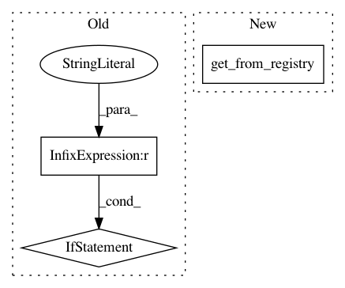

fcb01e3b18c0b3304c4ff0b1f0b8b4ede518f762,ludwig/features/numerical_feature.py,NumericalFeatureMixin,get_feature_meta,#Any#Any#Any#,58
Before Change
def get_feature_meta(column, preprocessing_parameters, backend):
compute = backend.df_engine.compute
if preprocessing_parameters["normalization"] is not None:
if preprocessing_parameters["normalization"] == "zscore":
return {
"mean": compute(column.astype(np.float32).mean()),
"std": compute(column.astype(np.float32).std())
}
elif preprocessing_parameters["normalization"] == "minmax":
return {
"min": compute(column.astype(np.float32).min()),
"max": compute(column.astype(np.float32).max())
}
else:
logger.info(
"Currently zscore and minmax are the only "
"normalization strategies available. No {}".format(
preprocessing_parameters["normalization"])
)
return {}
else:
return {}
@staticmethod
After Change
@staticmethod
def get_feature_meta(column, preprocessing_parameters, backend):
numeric_transformer = get_from_registry(
preprocessing_parameters.get("normalization", None),
numeric_transformation_registry
)
return numeric_transformer.fit_transform_params(column, backend)
@staticmethod
In pattern: SUPERPATTERN
Frequency: 3
Non-data size: 3
Instances
Project Name: uber/ludwig
Commit Name: fcb01e3b18c0b3304c4ff0b1f0b8b4ede518f762
Time: 2020-12-03
Author: jimthompson5802@gmail.com
File Name: ludwig/features/numerical_feature.py
Class Name: NumericalFeatureMixin
Method Name: get_feature_meta
Project Name: uber/ludwig
Commit Name: fcb01e3b18c0b3304c4ff0b1f0b8b4ede518f762
Time: 2020-12-03
Author: jimthompson5802@gmail.com
File Name: ludwig/features/numerical_feature.py
Class Name: NumericalFeatureMixin
Method Name: add_feature_data
Project Name: uber/ludwig
Commit Name: 3a32d6e84f48d646da3ca1f4c7eeda31850a2968
Time: 2020-05-04
Author: w4nderlust@gmail.com
File Name: ludwig/utils/hyperopt_utils.py
Class Name:
Method Name: update_hyperopt_params_with_defaults